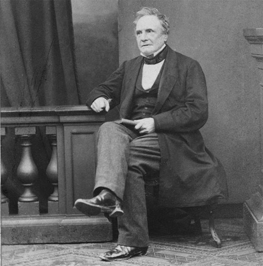

Charles Babbage
The Father of Computer

Picture of Sir Charles Babbage
Here's a timeline of Charles Babbage life
- 1791 Born in London, England
- 1791 Was baptised
- 1808 Moved to old Rowdens house in East Teignmouth
- 1810 Arrived at Trinity College, Cambridge
- 1812 Form the Analytical Society
- 1814 Recieved degree defended a thesis
- 1816 Elected a Fellow of the Royal Society
- 1827 His father Passed away
- 1828 Was Lucasian Professor of Mathematics at Cambridge
- 1834 Completed the first drawings of the analytical engine, the forerunner of the modern electronic computer
- 1840 discussed his ideas with mathematicians
- 1864 Word in his last statment that he never give up hope that the analytical engine would be build
- 1871 Passed away
"As soon as an Analytical Engine exist, it will neccessarily guide the future course of science" ~ Charles Babbage
If you have time, you should read more about his life on his Wikipedia entry